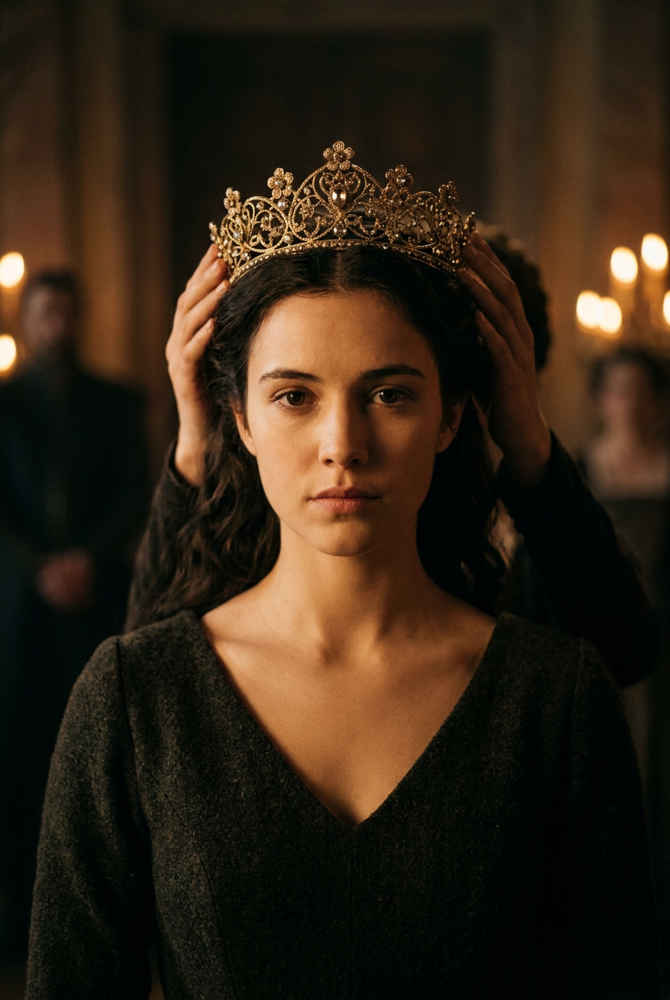
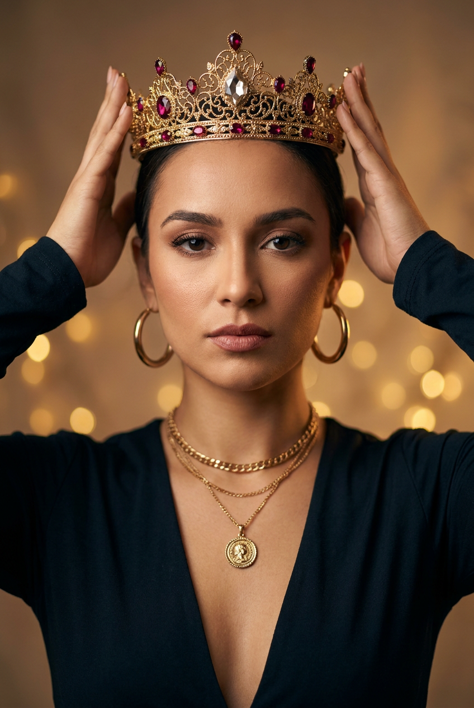
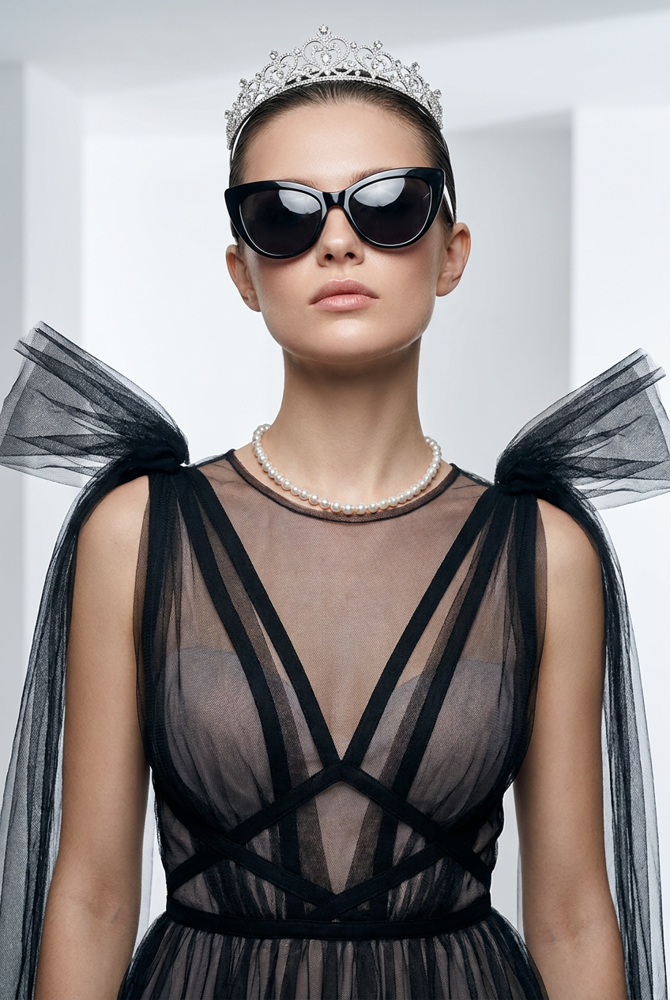
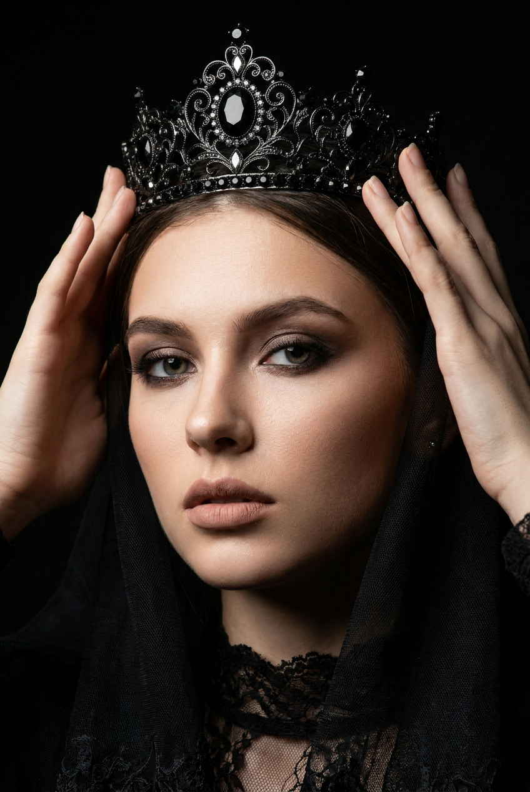
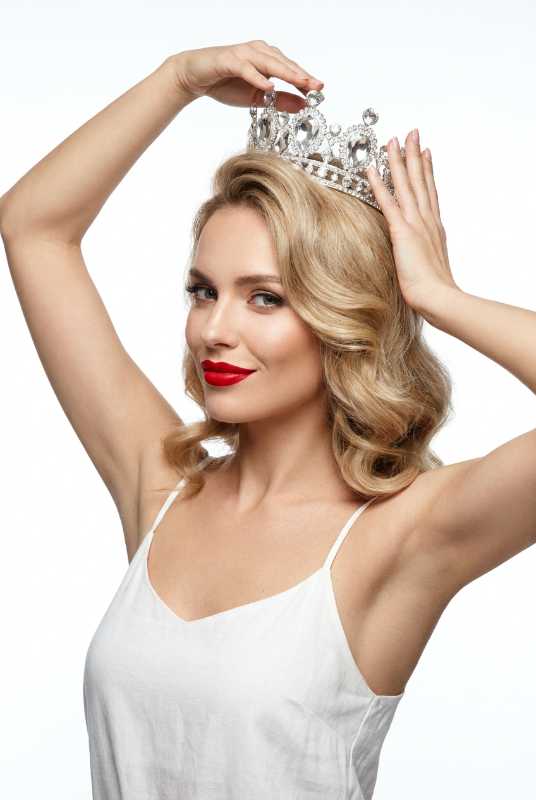
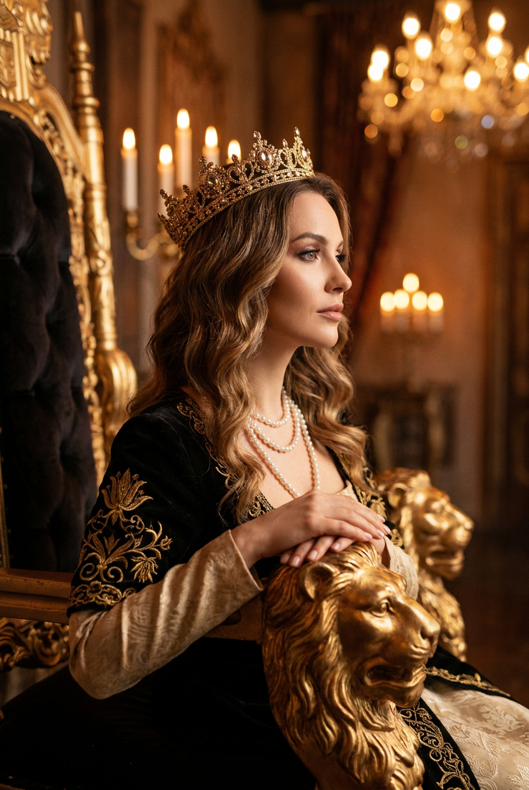
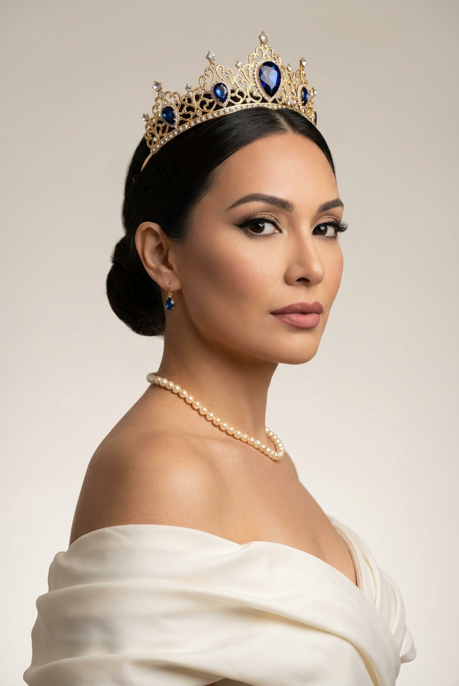
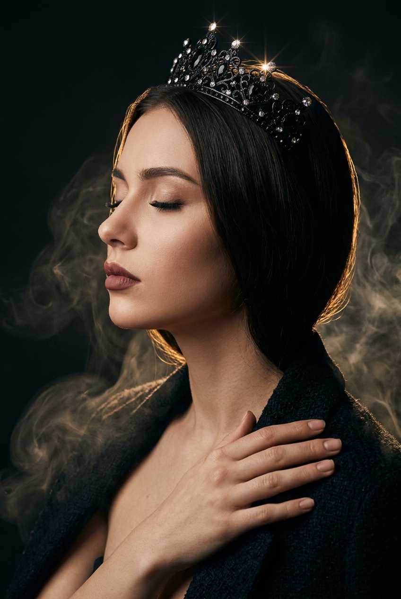
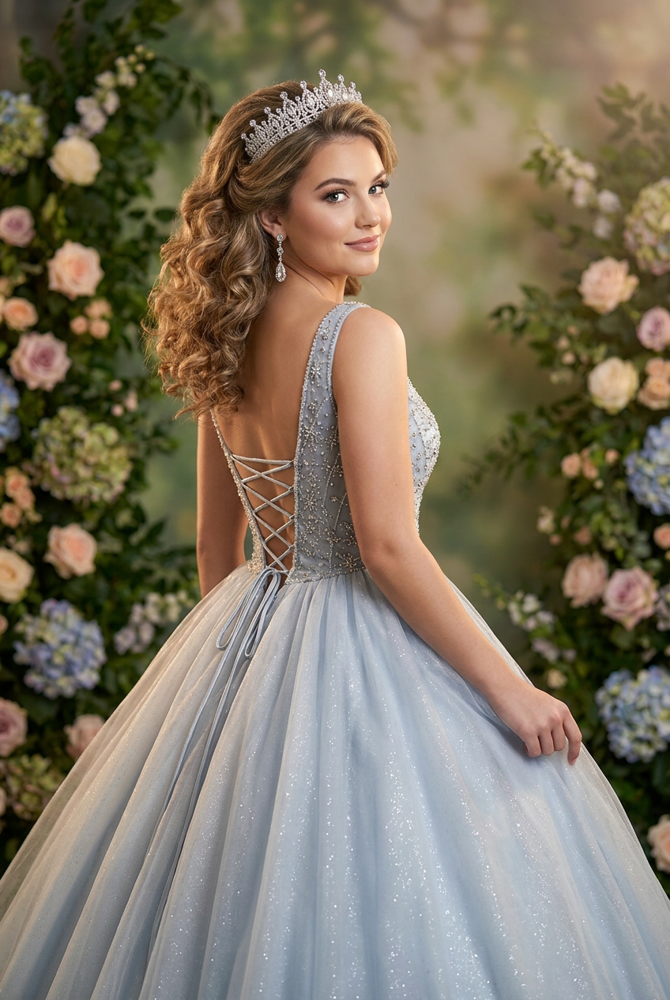
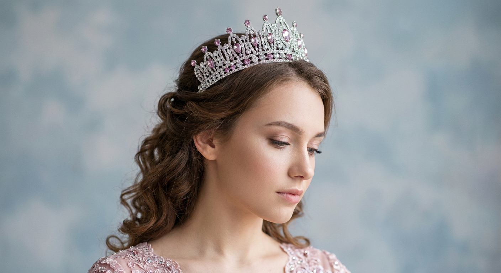

ИИ-фото в короне: 10 промптов для нейросети

Корона часто превращает красивый портрет в случайный костюмный кадр: украшение съезжает, пальцы ломаются, а лицо теряется в декорациях. Генерация помогает заранее задать позу, свет, ракурс и настроение, чтобы получить убедительный образ королевы или принцессы.
В подборке — 10 готовых сценариев: от исторического портрета в дворце и тёмной готики до белой студии, трона со львом, съёмки через плечо и мечтательного крупного плана. Каждый промпт рассчитан на вертикальное ИИ-фото с проработанными украшениями, тканями и кожей.
Как сгенерировать такое фото: пошагово
Нужен снимок анфас при ровном свете, лицо в кадре целиком, без тёмных очков и головных уборов. Разрешение от 1000 пикселей по короткой стороне. Чем чётче исходник, тем точнее модель повторит черты.
Выберите сценарий ниже и нажмите «Копировать» — текст уйдёт в буфер целиком, вместе с командой сохранения внешности. Эта команда стоит первой строкой и отвечает за то, чтобы на выходе было ваше лицо, а не случайное.
Кнопка «Сгенерировать» рядом с каждым промптом открывает модель в новой вкладке. Nano Banana Pro работает с референсом лица — в отличие от моделей, которые генерируют портрет с нуля и узнаваемость теряют.
Промпт — в поле ввода, портрет — через загрузку референса. Порядок значения не имеет, но без референса команда сохранения внешности работать не будет: модели нечего сохранять.
Для сторис и ленты берите 9:16, для превью и обложек — 4:3. Первый результат редко идеален: если поза или свет ушли не туда, поправьте соответствующую часть промпта и запустите заново. Обычно хватает двух-трёх итераций.
10 промптов для генерации
1. Коронация в тёмном дворце
Строго сохранить внешность по загруженному референсу: черты лица, пропорции, мимику и текстуру кожи без изменений. Фотореалистичный исторический портрет взрослой женщины в образе молодой королевы, вертикальная композиция по грудь, лицо и корона строго в центре. Она смотрит прямо в объектив, выражение спокойное, серьёзное, без улыбки. Камера установлена немного ниже уровня глаз, поэтому тиара, поднятая почти над линией лба, выглядит монументально. С двух сторон в кадре видны руки помощников: пальцы аккуратно удерживают боковые части короны, анатомия кистей естественная, без лишних пальцев и деформаций. На фоне — размытый роскошный дворцовый интерьер, золотистые точки свечей или ламп и неясные силуэты людей. Киношный dark palace, high-end fashion editorial, тёплый драматический свет, реалистичная кожа и фактура ткани, малая глубина резкости, фокус на лице и украшении, объектив 85 мм, f/1.8, тонкое плёночное зерно.
2. Тиара в руках королевы

Строго сохранить внешность по загруженному референсу: черты лица, пропорции, мимику и текстуру кожи без изменений. Фотореалистичный beauty-портрет взрослой женщины в эстетике royal queen и glam tiara, вертикальный кадр по грудь, модель расположена симметрично и смотрит прямо в камеру. Обе руки подняты к голове: пальцы мягко касаются нижней части тиары у висков и удерживают украшение по бокам, жест уверенный, но спокойный. Корона ровно сидит на голове, не перекошена. Волосы гладкие, аккуратно уложены с центральным или слегка смещённым пробором. Натуральная кожа с видимой текстурой, ровный тон без пластикового эффекта. Макияж glam: чёткие брови, выразительные глаза с тенями и стрелками, длинные ресницы, губы насыщенного оттенка. За спиной — мягкое тёплое боке. High-end editorial, кинематографичная мягкая цветокоррекция, резкость на лице и камнях, объектив 85 мм, f/2, вертикальное разрешение 4:5.
3. Королевский глянец и очки

Строго сохранить внешность по загруженному референсу: черты лица, пропорции, мимику и текстуру кожи без изменений. Фотореалистичный fashion-editorial портрет взрослой женщины по плечи и шею, вертикальная композиция, чистый студийный фон. Камера расположена на уровне глаз и немного ниже, чтобы подчеркнуть осанку. Модель стоит фронтально, подбородок слегка приподнят, шея вытянута, плечи раскрыты. Взгляд скрыт за крупными солнцезащитными очками, поэтому настроение передаётся позой. Волосы гладко убраны назад или уложены набок, несколько свободных прядей выглядят естественно. На плечах и груди лежат симметричные драпировки из сетки или тюля, похожие на лёгкие крылья; ткань не расползается и сохраняет форму. Добавить корону или тиару с чёткими бликами на металле и камнях. Руки не акцентировать. Glam-свет, аккуратная ретушь без пластика, мягкая малая глубина резкости, реалистичные материалы, объектив 90 мм, f/2.2.
4. Готическая королева

Строго сохранить внешность по загруженному референсу: черты лица, пропорции, мимику и текстуру кожи без изменений. Фотореалистичный студийный портрет молодой взрослой женщины в стиле royal gothic и dark queen, крупный вертикальный кадр по плечи. Она стоит строго по центру и смотрит прямо в объектив, лицо спокойное, уверенное, слегка серьёзное. Обе руки подняты к голове: левая рука видна слева и касается боковой филиграни тиары, правая удерживает верхнюю часть короны рядом с драгоценными вставками. Пальцы анатомически правильные, без слияния и лишних фаланг. На лице аккуратные брови, мягкий smoky eyes, чёткая линия ресниц или стрелка, матовые сатиновые губы. Корона роскошная, с тонкой металлической работой, тёмными камнями и яркими бликами. Фон полностью чёрный, без деталей, как в контролируемой студии. Контрастный драматический свет, high-fashion editorial, реалистичная кожа, ультрадетальные украшения, объектив 85 мм, f/1.8, shallow depth of field.
5. Белая студия и дерзкая тиара

Строго сохранить внешность по загруженному референсу: черты лица, пропорции, мимику и текстуру кожи без изменений. Фотореалистичный fashion beauty-портрет взрослой женщины в вертикальном формате, кадр от плеч до талии на чистом белом фоне. Поза динамичная и немного игривая: модель повернута к камере в три четверти, смотрит в объектив или чуть мимо него и улыбается с лёгкой дерзкой уверенностью. Корона строго по центру головы и полностью видна. Обе руки согнуты и подняты над головой: одна ладонь касается тиары сбоку, вторая поддерживает украшение рядом с теменем. Руки и корона помещаются в плотную рамку без обрезанных пальцев. Волосы и детали украшения резкие, кожа натуральная, без эффекта пластиковой ретуши. Губы насыщенного оттенка. High-key студийный свет равномерно заполняет сцену, тонкие тени сохраняют объём, на металле и камнях заметны чёткие блики. Glossy fashion retouch, умеренное плёночное зерно, объектив 70 мм, f/4, вертикальное разрешение 4:5.
6. Королева у трона

Строго сохранить внешность по загруженному референсу: черты лица, пропорции, мимику и текстуру кожи без изменений. Фотореалистичный fashion- и royal-editorial портрет женщины в роскошном замковом зале, вертикальный кадр в профильной позе три четверти. Модель повернута вправо, смотрит вперёд и немного в сторону, выражение уверенное и спокойное. В фокусе находятся лицо, корона и линия шеи; ниже видны ожерелье, верх платья, руки и край трона. Обе руки расслабленно лежат на подлокотнике, пальцы естественные, без сложного сцепления и деформаций. На переднем плане заметна золотая скульптура льва — голова или фигура на подлокотнике. Волосы собраны в элегантную причёску, макияж вечерний, украшения детализированы. Замковый интерьер и свечи уходят в мягкое размытие. Тёплый cinematic light, золотистая цветокоррекция, фактурные ткани и драгоценности, shallow DOF, лёгкое film grain, объектив 105 мм, f/2.
7. Принцесса в три четверти

Строго сохранить внешность по загруженному референсу: черты лица, пропорции, мимику и текстуру кожи без изменений. Фотореалистичный fashion-портрет взрослой женщины в образе королевы или принцессы, вертикальный кадр по грудь и плечи. Она стоит в три четверти, корпус слегка развёрнут вправо, лицо повёрнуто к камере, взгляд направлен на зрителя или вдаль. Голова немного приподнята, шея вытянута, плечи открыты — поза выглядит элегантно и уверенно. Корона находится в верхней части изображения, расположена ровно и симметрично. Руки частично скрыты драпировкой платья, видны линия плеча и верх спины. Волосы собраны в аккуратную причёску с гладкими линиями и небольшой прядью у виска. Макияж soft glam: выразительные тёмные стрелки, насыщенные ресницы, мягкий контур скул, аккуратные губы. Нейтральный чистый фон, детальные камни и металл, мягкий студийный свет, малая глубина резкости, объектив 85 мм, f/2.2.
8. Тихий профиль тёмной королевы

Строго сохранить внешность по загруженному референсу: черты лица, пропорции, мимику и текстуру кожи без изменений. Фотореалистичный fashion-editorial портрет молодой взрослой женщины в эстетике dark queen, вертикальный крупный кадр от макушки до верхней части плеч. Модель повернута влево, показана в профиль, глаза закрыты, лицо чуть поднято, губы расслаблены, выражение созерцательное и спокойное. Одна рука на переднем плане мягко обнимает корпус: кисть и пальцы касаются плеча или верхней части груди, анатомия естественная, без деформаций. Корона установлена ровно по центру головы. Волосы гладко уложены, отдельные пряди повторяют контур лица и спускаются вниз. Вечерний макияж включает чёткие брови, выразительные ресницы, аккуратные тени и матовые или сатиновые губы тёмно-нюдового, розово-коричневого оттенка. Low-key свет, тонкий smoke/haze, глубокий кинематографичный контраст, лёгкое плёночное зерно, объектив 100 мм, f/2.
9. Портрет через плечо

Строго сохранить внешность по загруженному референсу: черты лица, пропорции, мимику и текстуру кожи без изменений. Фотореалистичный fashion- и beauty-портрет взрослой женщины в образе royal princess на декоративной свадебной или праздничной фотозоне. Камера смотрит на модель сзади в три четверти: в кадре читаются спина, талия и драпировка платья, а голова повернута к объективу. На лице лёгкая улыбка и спокойный уверенный взгляд через плечо. Корпус немного развёрнут, чтобы подчеркнуть изгиб спины и линию юбки. Одна рука может слегка поддерживать подол или бок платья в районе талии. Волосы уложены в объёмные волны или локоны, часть собрана. На голове серебряная диадема с множеством сияющих кристаллов, в ушах длинные серьги-подвески с мерцающими вставками. Чистая кожа, естественный макияж, деликатные блики на украшениях, лёгкое сияние ткани, high-end editorial, мягкий свет, вертикальный кадр, объектив 85 мм, f/2.8.
10. Мечтательная принцесса

Строго сохранить внешность по загруженному референсу: черты лица, пропорции, мимику и текстуру кожи без изменений. Фотореалистичный крупный beauty-портрет молодой взрослой женщины в образе royal princess, вертикальный кадр, профиль три четверти с поворотом головы вправо. Модель смотрит вниз, взгляд опущен, выражение спокойное и мечтательное. Корона занимает верхнюю треть композиции, лицо расположено в центре и остаётся главным объектом резкости. Внизу видны плечи и верх платья или кружевного аксессуара с нежными розово-пудровыми деталями. Волосы уложены мягкими локонами, часть прядей у виска убрана назад. Макияж деликатный: мягкие тени на веках, акцент на ресницы, аккуратные брови, нюдовые или розово-персиковые губы. Съёмка очень близким портретным объективом 105 мм, лицо и камни короны резкие, фон полностью растворён в гладком боке. Cinematic soft light, dreamy pastel-палитра, реалистичная кожа и ткань, лёгкая плёночная цветокоррекция, f/1.8, вертикальное разрешение 4:5.
Что важно учесть в этом стиле
Корона должна быть описана не только как украшение, но и как часть композиции: укажите её положение, размер, симметрию, материал и то, где находятся руки. Для сложных жестов лучше писать отдельно о каждой кисти: так нейросети проще распределить пальцы и не смешать их с филигранью.
Свет задаёт статус образа сильнее, чем декорации. Для дворца подойдут тёплые свечи и боке, для dark queen — чёрный фон и жёсткий контраст, для принцессы — пастельный soft light. Добавьте объектив и диафрагму: 85–105 мм и f/1.8–2.8 обычно дают выразительный портрет с размытым фоном.
Идеи для вариаций
- Замените дворец на заснеженную террасу, библиотеку замка или зеркальный зал.
- Сделайте корону ледяной, чёрно-серебряной, жемчужной или украшенной цветными сапфирами.
- Добавьте бархатный плащ, кружевной воротник, платье с вышивкой или современный костюм couture.
- Поменяйте настроение: торжественная коронация, тайная встреча, траурный придворный портрет или обложка журнала.
- Для серии зафиксируйте лицо, корону и палитру, а затем меняйте только позу, фон и источник света.
Как собрать свой промпт
Начните с формата и жанра: вертикальный портрет, fashion editorial, историческая съёмка или beauty крупным планом. Затем задайте положение модели, направление взгляда, выражение лица и точное размещение короны. После этого опишите руки и одежду — именно эти детали чаще всего требуют нескольких генераций.
В конце добавьте свет, фон, объектив, диафрагму, глубину резкости и требования к фактурам. Полезно указать «натуральная текстура кожи», «анатомически правильные пальцы», «без лишних украшений» и «корона строго по центру». Закладывайте 4–8 попыток на один сложный сюжет: сначала добейтесь удачной позы, а затем уточняйте камни, ткань и цветокоррекцию.
Ошибки, из-за которых кадр не получается
- Слишком общая корона. Без размера, положения и материала украшение может превратиться в ободок или съехать набок.
- Перегруженное описание рук. Десятки действий в одной фразе часто дают лишние пальцы и слипшиеся кисти.
- Конфликтующие ракурсы. Не сочетайте профиль, фронтальный взгляд и съёмку со спины без пояснения, как именно повернуты голова и корпус.
- Свет без источника. Слова «красивое освещение» не объясняют нейросети, где должны быть блики и тени.
- Слишком сильная ретушь. Формулировки про идеальную фарфоровую кожу убирают естественную фактуру и делают портрет пластиковым.
- Мелкая рамка. Если в сцене есть руки, корона и плечи, заранее укажите кадрирование, иначе часть важных деталей будет обрезана.
Частые вопросы
Как сделать такое ИИ-фото бесплатно?
Попробуйте Kandinsky и Шедеврум: они подходят для генерации по тексту, но могут упрощать короны и ошибаться в пальцах. В Krea AI и Arena.ai удобнее тестировать разные варианты и работать с референсом, однако бесплатный доступ обычно ограничивает число генераций, скорость, разрешение или функции редактирования. При загрузке референса проверяйте права на исходное фото: нейросеть не гарантирует точного сходства и может изменить лицо, позу и украшения.
Как сохранить корону ровной и симметричной?
Укажите, что украшение находится строго по центру головы, параллельно линии бровей и полностью помещается в кадр. Добавьте симметричную фронтальную позу и попросите чёткую резкость на короне. Если генератор поддерживает маскирование, отдельно перерисуйте область тиары.
Что делать, если нейросеть ломает пальцы?
Упростите жест и опишите каждую руку отдельно: одна касается левой стороны короны, вторая удерживает правую. Не задавайте несколько сложных переплетений пальцев. После генерации используйте локальное исправление кистей или создайте несколько вариантов с одной и той же композицией.
Как получить реалистичную кожу без пластика?
Используйте формулировки «видимая натуральная текстура кожи», «мягкая ретушь», «реалистичные поры и тени», а не «идеальная кожа». Укажите мягкий свет и умеренную детализацию. Для финального результата лучше немного снизить интенсивность стилизации и проверить изображение в масштабе 100 процентов.